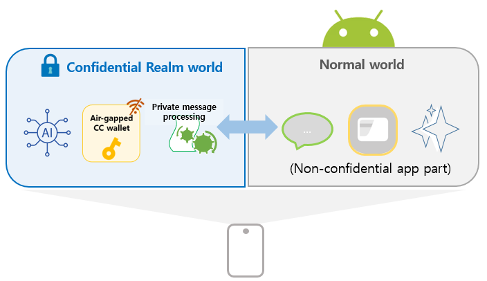
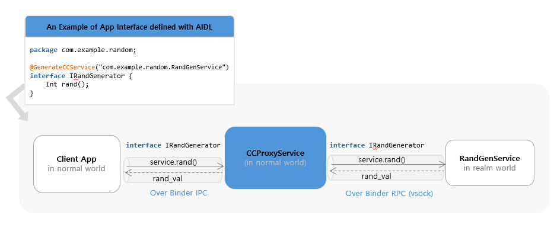
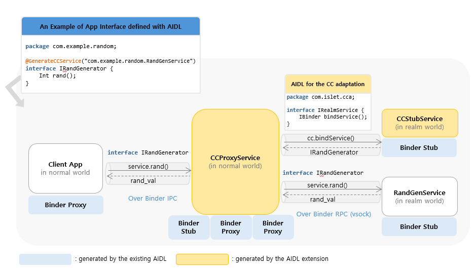
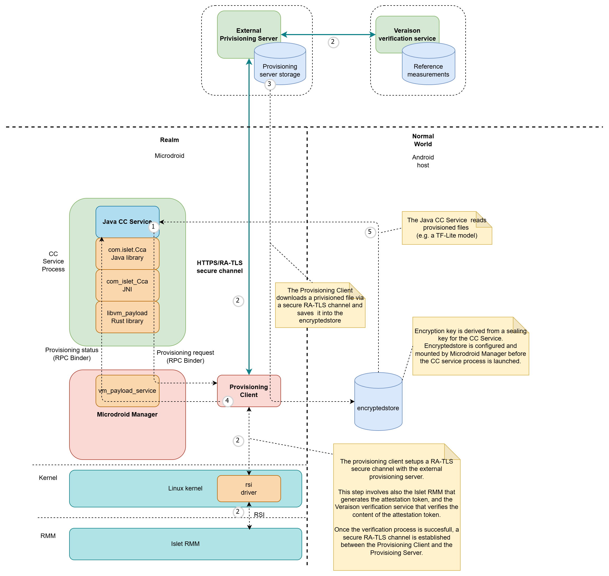

Extending Confidential Computing for Android
Mobile applications increasingly handle sensitive data and security-critical workloads, including crypto wallets, digital identity, and on-device AI inference that leverages personal data to provide valuable, personalized experiences in users’ daily lives. As these use cases expand, stronger isolation guarantees than those offered by the traditional Trusted Execution Environments (TEEs) like Arm TrustZone are becoming necessary. This need applies not only to system and OEM-provided applications but also for the growing number of third-party apps installed from app stores that now routinely process sensitive information.
To address this need and accelerate the adoption of confidential computing on end user devices, we extend the Android OS with confidential computing capabilities based on our Islet RMM atop Arm CCA.

Our approach enables Android application code to run inside a realm (confidential VM). The core concepts of our design are:
-
Transparency to existing client applications
Applications executing confidentially within a realm can seamlessly interact with client applications in the normal world, without requiring any modifications to client-side code.
-
Developer-friendly confidential application model
- Confidential App parts can be developed using standard Android APIs, allowing developers to reuse existing knowledge without additional learning overhead.
- Existing applications can be incrementally adapted by migrating only security-critical components into a realm with minimal changes, such as annotating code or updating the manifest.
-
Built on well-known foundation
The design builds upon the Android Virtualization Framework and Microdroid as the execution environment for realms, leveraging a mature and production-ready infrastructure originally designed for launching and managing protected virtual machines.
Key Approach Ideas
The lift and shift approach of running an entire Android application inside a realm streamlines migration to CC-based execution, but it requires the full Android Runtime and tight interaction with normal-world Android OS components. This significantly increases system complexity, demands heavyweight runtime support, enlarges the attack surface, and requires intrusive modifications to core components such as the kernel, Binder, zygote, and system_server.
We aim to preserve compatibility with Android Framework while maintaining App confidentiality and minimizing development friction. To achieve these goals, our design is built upon four core ideas.
I. Code Split for Lightweight and Secure Execution
We adopt a code-splitting approach, where only the security-sensitive parts of the application are executed inside the realm, while the rest remains in the normal world. This design:
- Avoids modifications to core Android OS components.
- Enables a lightweight runtime within a realm.
- Reduces the attack surface.
II. Automated Inter-World Communication via AIDL-Based Binder and Android Service Abstraction
To preserve existing application behavior and interfaces, we use the Android Service class as the unit of code splitting, as it naturally provides modular and reusable components while supporting communication across process boundaries via AIDL-based Binder IPC.
While AIDL interfaces typically rely on the Android kernel’s Binder IPC for inter-process communication, they do not support communication between the Normal World and the Realm World. To bridge this gap, we provide an annotation that transforms a standard AIDL interface into one capable of inter-world communication. Applying this annotation automatically generates (1) a Service in the Normal World that handles Binder IPC requests, and (2) a corresponding interface that leverages Android’s RPC Binder over sockets, enabling method calls across the two worlds.
By running as Android services inside the Realm, confidential components can be invoked by existing client applications without any modifications, just like regular Android services. This approach ensures transparency, modularity, and seamless integration with existing applications.

The detailed design of transparent invocation of realm services from the normal world is described in later chapters.
III. Seamless Integration with CC
Our framework provides comprehensive integration with Arm CCA through the Islet RMM, enabling Android services to leverage hardware-rooted security primitives. Key CC services include remote attestation for runtime integrity verification, secure provisioning for trusted asset delivery, secret derivation with specialized sealing keys and encrypted storage for persistent data protection. Services can generate device-unique secrets through the hardware-protected key hierarchy and use sealing mechanisms to encrypt data that is cryptographically bound to the specific realm and platform configuration. This ensures that sealed data can only be unsealed by the same realm running on the same platform with the same security configuration.
These capabilities work together to provide a seamless confidential computing environment that preserves compatibility with existing Android development practices while delivering strong hardware-enforced security guarantees for protecting sensitive application data and operations.
IV. Lightweight Runtime Without Full Android Framework
To minimize the attack surface and enable fast startup, we remove the dependency on the full Android Runtime inside the realm. Instead, we construct a lightweight execution environment that:
- Directly instantiates application classes.
- Executes Java application logic using only the Dalvik VM from Android ART.
- Eliminates unnecessary Android framework dependencies.
This enables efficient execution of Java-based Android application code inside the realm with minimal overhead. Implementation details are discussed in Chapters 3 and 4.
Demonstration
Our implementation is applied to AOSP 15 and runs on Arm CCA–enabled Android virtual devices (Cuttlefish).
As a concrete example, we present an end-to-end confidential computing workflow by integrating our framework into TensorFlow Lite BERT-QA, where an AI model operates entirely within a secure realm. The demonstration highlights the use of remote attestation, showcasing how sensitive data—specifically the AI model in this case—can be securely provisioned and stored on user devices. Furthermore, it illustrates how AI model inference is conducted confidentially, ensuring data privacy and security throughout the entire process.
This repository hosts the source for the documentation site for confidential computing on Android.
Architecture Overview
This document describes how the system extends Android to support confidential computing by allowing selected app code to run inside a protected execution environment.
The architecture enables an Android service to execute inside a Realm VM while still being exposed to client applications through the standard Binder IPC mechanism. From the perspective of the client, the service behaves like a regular Android bound service, while its implementation runs in an isolated environment.

Execution Domains
Normal World (Host Android)
Runs full Android, hosts the entry point for confidential services, manages the Realm VM lifecycle, and bridges communication with services running in the Realm.
Realm World (Confidential World running Realm VMs)
Provides a hardware-assisted isolated environment for sensitive code and data. It runs a minimal Android-based runtime on Microdroid, initializing only the components needed for service execution, including a lightweight Dalvik VM for Java-based services.
Components
Confidential Computing Components
These components are implemented as part of this system and provide the integration between Android and the confidential execution environment.
-
CC Proxy: CC Proxy is an Android bound service that runs in the Normal World and serves as the entry point for all client interactions. It exposes the service interface using AIDL, allowing client applications to bind and invoke methods using standard Android IPC. Internally, CC Proxy is responsible for forwarding these requests to the Realm VM. In addition to request forwarding, CC Proxy manages the lifecycle of the Realm VM. It uses an internal helper (VmManager) to coordinate VM creation, startup, and connection to the Realm-side service. By handling both IPC bridging and lifecycle management, CC Proxy allows the confidential service to appear indistinguishable from a regular Android service.
-
CC Stub: CC Stub runs in the Realm World and acts as the server-side counterpart to CC Proxy. It receives incoming Binder RPC calls over vsock from the Normal World, and dispatches them to the appropriate service implementation. It also handles service initialization and binding within the Realm environment. This separation ensures that communication logic remains isolated from the actual business logic, allowing service implementations to remain simple and unchanged.
-
CC Service: CC Service is the confidential code implemented by app developers and runs inside the Realm VM. It follows the standard Android bound service model, with an AIDL-defined interface and a Java-based implementation. Because the execution model closely matches that of a regular Android service, existing code can often be reused with minimal or no modification. The main difference is that the service executes in a protected environment and is accessed remotely via Binder RPC.
-
Provisioning Client: The Provisioning Client runs inside the Realm World and is responsible for provisioning confidential data from external Provisioning Servers. It is controlled by the Microdroid Manager, which executes it once a CC Service requests the provisioning operation. During the provisioning operation, the Provisioning Client establishes a secure channel with an external Provisioning Server using the RA-TLS protocol (a protocol that combines Remote Attestation with TLS). Once the secure channel is established, the Provisioning Client downloads confidential data into the location inside the encrypted storage mount point requested by the CC Service.
-
encryptedstore: The encryptedstore is an AVF Encrypted Store mechanism that provides CC Services with persistence and confidentiality of data at rest. The encrypted storage uses a virtual block device on the guest, which is backed by a disk image file stored on the host. In our solution, the encryption keys used by encryptedstore are derived from the Realm Sealing Key (which is rooted in a Hardware Unique Key and is bound to the Realm authority and identity data) and are also bound to the Microdroid and CC Service application authority data. This ensures that only a particular CC Service that saved the data in encryptedstore on a particular hardware platform can access it.
Platform Components
The system relies on several existing platform components that provide virtualization and isolation capabilities.
-
Android Virtualization Service: The Virtualization Service is part of Android and provides APIs for managing virtual machines. In this architecture, it is used by CC Proxy to create and control the Realm VM. It handles tasks such as VM initialization, resource allocation, and lifecycle management. By relying on this existing service, the system avoids introducing a custom VM management layer and remains aligned with Android’s virtualization framework.
-
KVM/lkvm: KVM provides the underlying virtualization support at EL2. It is responsible for running the Realm VM and ensuring that it is properly isolated from the host system. With CCA-related extensions, KVM enables the creation of protected execution environments backed by hardware.
-
Realm Management Monitor (RMM): lset-RMM is part of the confidential computing platform that supports the Arm CCA and is responsible for managing Realm execution. It handles operations such as Realm creation, execution, and termination, and works with the hypervisor to enforce isolation guarantees between the Normal World and the Realm World.
-
Microdroid: Microdroid is Android’s minimal guest image for protected VMs under the Android Virtualization Framework. A mini-Android OS for protected VMs (pVMs) that loads a main binary and shared libraries from an APK, activates APEX modules on the guest, builds native code against Bionic, and uses Binder RPC over vsock for IPC—rather than shipping full-device Android.
AIDL Engine Behind the Scene
The AIDL Engine has been extended with a new feature that automates the integration between the Normal World and the Realm World.
When an AIDL interface is annotated with @GenerateCCService, the engine generates the necessary glue code, including the CC Proxy and CC Stub components.
This removes the need for developers to manually implement cross-domain communication logic.
As a result, developers can focus on defining service interfaces and implementing business logic, while the system handles the underlying infrastructure.
Inter-world Communication
Communication between the Normal World and the Realm World is implemented using a layered Binder stack: Binder IPC between client applications and CC Proxy, and Binder RPC to extend Binder semantics across process and VM boundaries. This design allows the system to preserve the familiar Binder programming model while enabling communication across isolated environments.
Service interaction diagrams (high level)
A typical request flows through the system as follows:
CC Service startup
sequenceDiagram
autonumber
box Normal World (Android)
participant C as Client App
participant P as CCProxyService
participant V as VmManager
participant VM as VirtualMachine
participant VS as VirtualizationService (Host)
participant VMM as VirtualMachineManager
participant VMGR as virtmgr
end
box Realm (Guest Realm VM hosting Microdroid)
participant MM as MicrodroidManager (Guest)
participant CCS as CCStub
participant CCSE as CCService (User Java)
end
%% ---------- Boot & Connect Phase ----------
Note over P, V: CCPlugIn
Note over VM, VMM: framework-virtualization library
Note over CCS, CCSE: Microdroid launcher/payload
C->>C: context.bindService()
C-->>P: onCreate() (via Activity Manager)
note over V: Initialize VirtualMachineConfig
P->>V:setVmServiceCallback()
P->>V:vmRun()
V->>VMM:getOrCreate(VirtualMachineConfig, ...)
VMM->>VM:create(VirtualMachineConfig, ...)
activate VM
VM->>VS:getInstance()
VS->>VS:nativeSpawn()
VS-)VMGR: spawn process
activate VMGR
VMGR-->>VS: clientFd
VS->>VS:nativeConnect(clientFd)
VS-->>VM: VirtualMachine instance
Note over VM: Initialize InstanceId, instance and encryptedstore partitions
VM-->>VMM: VirtualMachine instance
deactivate VM
VMM-->>V: VirtualMachine instance
V->>VM:run()
Note over VM: Prepare vm config, setup console for virtmgr
VM->>VMGR:createVm(config, consolein, consoleout, ...)
VMGR-->>VM: IVirtualMachine instance
VM->>VMGR: IVirtualMachine.registerCallback()
VM->>VMGR: IVirtualMachine.start()
V->>VM:setCallback()
VMGR->>VMGR: start lkvm (with Arm CCA Realms enabled)
VMGR->>MM: lkvm launches Microdroid in Realm VM
activate MM
MM->>MM: try_run_payload()
MM-)CCS: spawn Microdroid Launcher/NativeStub
activate CCS
MM-->>VMGR: notifyPayloadStarted()
VMGR-->>VM: onPayloadStarted()
VM-->>V: onPayloadStarted()
CCS-)CCSE: load and initialize CCService (DEX)
activate CCSE
note left of CCS: The VSOCK port of the Service is exposed to the host
CCS-->>CCS: Setup Binder RPC/VSOCK server
CCSE-->>MM: AVmPayload_notifyPayloadReady()
MM-->>VMGR: notifyPayloadReady()
VMGR-->>VM: onPayloadReady()
VM-->>V: onPayloadReady()
V->>VM: connectToVsockServer()
Note over VM, CCS: The CC Proxy Service establishes Binder RPC connection over VSOCK with the CC Stub obtaining IBinder reference to IRealmService Stub
VM--xCCS: Binder RPC over VSOCK
VM-->>V: IBinder reference to IRealmService
V->>P: onVmServiceReady(IRealmService reference)
P->>CCS: IRealmService.onBindForTargetService()
CCS->>CCSE: onCreate()
CCS->>CCSE: onBind()
CCSE-->>CCS: IBinder reference to CC Service
CCS-->>P: IBinder reference to CC Service
note left of P: CCProxyService got the IBinder reference to CC Service,<br>it is now ready to work
deactivate CCSE
deactivate CCS
deactivate MM
deactivate VMGR
End-to-end call path (example call)
From the client’s perspective, the interaction is identical to calling a regular Android service. The cross-domain communication is handled transparently by the system.
sequenceDiagram
autonumber
box Normal World (Android)
participant C as Client App
participant P as CCProxyService
end
box Realm (Guest Realm VM hosting Microdroid)
participant CCSE as CCService (User Java)
end
%% ---------- End to End call ----------
C->>C: context.bindService(ServiceConnection instance)
C-->>P: onCreate() (via Activity Manager)
Note over P: Here are the steps related to startup of VM and CC Service inside VM<br>(details are on the CC Service startup diagram)
C->>P: onBind() (via Activity Manager)
P-->>C: ServiceConnection.onServiceConnected(IExampleInterface proxy)(via Activity Manager)
C->>C: Add button is clicked
C->>C: Parse a and b values from text fields
Note over P: addInt() is implemented by CC Proxy's IExampleInterface.Stub
C->>P: addInt(a, b)
activate P
Note over CCSE: addInt() is implemented by CC Service's IExampleInterface.Stub
P->>CCSE: addInt(a, b)
activate CCSE
CCSE-->>P: result
deactivate CCSE
P-->>C: result
C-->>C: Display result
deactivate P
AIDL-Generated Components for Confidential Computing on Android
This document explains which components are generated by the AIDL tool and why they are generated.

1) Source annotation
Code generation for confidential computing on Android starts from the AIDL annotation:
@GenerateCCService(FQCN="com.example.RandGenService")
The FQCN(Fully Qualified Class Name) value is the key input used by the build-time generator.
For detailed integration steps, see How to Integrate Confidential Computing into Android.
2) What is generated for CC Proxy
For host-side CC Proxy, the AIDL tool generates:
- CCProxyService
- AndroidManifest for the proxy service
Both are generated using the annotation FQCN value as the service identity.
Why this is required
Even after a service provider moves the target service to the Realm, existing client apps must still be able to call bindService(...) with the same FQCN they already use.
By generating them from the same FQCN, we preserve client compatibility:
- clients keep the same binding target
- AIDL call paths continue to work without client-side changes
3) What is generated for CC Stub
CC Stub is responsible for initializing the CC Service in the Realm. To do that, it must know the target service class identity (FQCN).
So, at build time, the AIDL tool generates an asset file that contains the target service FQCN (again from @GenerateCCService(...)).
At runtime, CC Stub reads this generated value and uses it to initialize the target CC Service.
4) Where to find generated files in example apps
In our example apps, generated components are placed in app-specific directories.
Please refer to the directories below in each example app repository:
- odcc-example-aosp:
<odcc-example-aosp>/OdccExampleServiceOrig/gen - odcc-tf-lite-bert-qa:
<odcc-tf-lite-bert-qa>/gen
App Package Structure
Confidential computing splits logic across the Normal World and the Realm, but from a host packaging perspective the integrator ships one Android application package (APK)** for the application that integrates CCPlugIn. That package is installed and launched like any other host app; it carries the host-side entry points (including CC Proxy) together with the Realm-side service implementation and glue. Client applications are external: any third-party or first-party app that already uses bindService against the published component name continues to do so without being part of this APK.
Inside the Realm, Microdroid runs a confidential workload made up of the same APK (mounted on the guest as the application image) plus APEX modules that the guest is configured to activate. That workload is what Microdroid Manager attaches and starts so the CC Service and CC Stub can execute in isolation.
Contents of the CC-enabled application APK
At a high level, that APK contains:
- CCProxyService and matching AndroidManifest entries so the host exposes the AIDL surface while the implementation executes in the Realm.
- Realm-side support (CC Stub and related bootstrap) and metadata (for example a generated asset with the FQCN of the Java CC Service class) so the guest can launch the correct implementation.
How CCPlugIn wires aidl, Soong, and generated sources is out of scope for this overview; see How to Integrate Confidential Computing into Android and AIDL-generated components.
Confidential workload (inside the Realm)
The confidential workload is the combination of that APK (CC Service and related code) and the APEX set supplied for the guest. The APEX layer is dominated by the ART modular runtime (typically the com.android.art APEX in AOSP builds) so Java/DEX-based CC Services can run inside Microdroid; additional APEX modules may be included when the build or guest configuration requires extra modular platform pieces (for example further libraries or services exposed as APEX on the host). Those modules are activated on the guest alongside the APK according to the Android Virtualization Framework / Microdroid guest model.
Summary
| Deliverable | Runs where | Role |
|---|---|---|
| External client apps | Normal World | Unchanged bindService to the exported AIDL service; not part of the CC-enabled application’s package |
| CC-enabled application APK | Normal World + guest image source | Host: CC Proxy / VM control; Realm: CC Service + Stub |
| APEX modules with the confidential workload | Realm (Microdroid guest) | ART (Java/DEX runtime) and any other declared modular dependencies the guest needs beyond the APK |
Arm CCA and Microdroid Integration
Overview
This document describes the integration of ARM Confidential Compute Architecture (CCA) with Microdroid as part of Android Virtualization Framework (AVF). The integration enables secure execution of Android bound services within isolated realms while maintaining compatibility with existing Android development practices. Key aspects of this integration include a robust sealing key derivation mechanism partially based on the Open profile for DICE (Device Identifier Composition Engine) specification and an ARM CCA-compliant remote attestation process that ensures system integrity from boot to runtime.
Sealing Key Derivation
The derivation of secrets (encryption/sealing keys) in the Android Virtualization Framework (AVF) and Microdroid relies on the Open Profile for DICE and Android Profile for DICE specifications, which provide a standardized approach to cryptographic key derivation in layered software systems.
In our solution, we combine the Islet RMM sealing key derivation process with the DICE Sealing key derivation in Microdroid Manager. The diagram in Figure 1 illustrates how the existing architecture has been adapted to implement our sealing key derivation mechanism within the Microdroid environment.
 Figure 1: Sealing key derivation process in the original AVF and our solution
Figure 1: Sealing key derivation process in the original AVF and our solution
Process Overview
The sealing key derivation process is a multi-stage procedure that ensures cryptographic keys are securely bound to specific realm and payload identities while maintaining resistance to unauthorized access and tampering. The process in Microdroid begins with the retrieval of a Realm Sealing Key from the Islet RMM through the Realm Service Interface (RSI) kernel driver by the first stage init process.
Detailed Derivation Steps
-
Realm Sealing Key Retrieval: The Islet RMM provides a Realm Sealing Key that is cryptographically bound to the realm’s authority data (Check the definition of Authority data in Open Profile for DICE), which includes the identity of the realm developer and the realm identity itself. This binding is achieved through the “Realm Metadata” mechanism, ensuring that the key remains resistant to realm updates such as kernel or initrd image modifications.
-
Microdroid Sealing Key Generation: During the first-stage initialization process, the Realm Sealing Key serves as the Input Keying Material (IKM) for an HKDF (HMAC-based Key Derivation Function) operation. The authority data of the system image (Microdroid system image) is incorporated as additional input material to derive the Microdroid Sealing Key.
-
Secure Key Transfer: The derived Microdroid Sealing Key is securely transferred to the Microdroid environment through a dedicated file stored on a separate, protected partition. This isolation ensures that the key material is not accessible to other system components during the boot process.
-
System Initialization: After the secure key transfer, the initialization process mounts the system partition and launches the Microdroid Manager, which is responsible for the next stage of key derivation.
-
DICE-based Key Derivation: The Microdroid Manager utilizes the received sealing key as input for the existing DICE-based sealing key derivation process. This process generates separate keys for:
- Encrypted storage (encryptedstore)
- CC Service (Microdroid payload in AVF nomenclature)
-
Key Destruction and Binding: Upon successful derivation of the required keys, the Microdroid Sealing Key is securely destroyed to minimize exposure. The final derived keys for the CC Service and encrypted storage are cryptographically bound to the authority data of:
- The provided APK (containing the Confidential Computing Service)
- Associated APEX packages (such as the ART runtime)
These components collectively form the Microdroid Payload, ensuring that the derived keys are uniquely tied to the specific service implementation and its concrete dependencies.
Remote Attestation
The Android Virtualization Framework originally utilized the Open Profile for DICE specification to generate certificate chains containing evidence of system integrity. In the standard AVF implementation, the DICE chains are used in a remote attestation process that typically involves a two-phase approach with the Remote Key Provisioning (RKP) Mechanism and an external RKP server.
ARM CCA Integration Approach
In our implementation, we have adopted the ARM Confidential Compute Architecture (CCA) methodology for remote attestation to better align with the hardware security features provided by ARM platforms. This approach requires careful consideration of how system measurements are captured and represented in the attestation token to accurately reflect the initial state of the realm.
This document only briefly describes the concepts of Arm CCA architecture. For more information, the reader should refer to the Arm CCA Security Model document. Regarding the detailed specification of Realm Management Monitor (Islet RMM implements that specification) and the format of the CCA attestation evidence, essential information can be found in ARM Realm Management Monitor specification document.
The Arm CCA attestation evidence is called CCA attestation token and it contains two cryptographically signed documents:
- CCA platform token
- Realm token

Figure 2: Attestation token format according to Arm RMM Specification (DEN0137, 1.0-rel0)
The CCA platform token contains information (claims) about hardware and firmware components that constitute CCA platform. This includes a challenge (it contains a cryptographic binder to the Realm token, i.e., the hash of the public key used to verify Realm attestation token), platform identity information (implementation and instance id), lifecycle (e.g. debug mode is enabled), the list of measurements of software/firmware components (name, version, hash, signed id). The CCA platform token is generated by Hardware Enforced Security (HES) module and is signed using a dedicated key embedded in the HES.
The Realm token contains information about a Realm. Specifically, it contains Realm Initial Measurement (RIM) that is a fingerprint of initial memory content of a Realm right before launching it. There are also four Realm Extensible Measurement slots that can be extended by the software components running in a realm during runtime. Apart from measurements, the Realm token contains a challenge, which is a unique nonce coming from an external Relying Party or Verifier that allows to prove the freshness of the attestation evidence. It also contains a Realm Public Key (RAK) that is used to verify the integrity and authenticity of the Realm token (the realm token is signed by Islet RMM using a dedicated Realm Attestation Key retrieved from the HES).
Measurement Architecture
To ensure comprehensive attestation of the system state, we have implemented a multi-layered measurement approach that captures critical system components at different stages of the boot process:
Islet RMM
The Islet RMM measures the initial content of a realm and reflects it in the Realm Initial Measurement (RIM). In the current architecture, the initial realm content contains: the Linux kernel image, the init RAM disk image, and the Device Tree Blob (DTB).
First-Stage Initialization Process
The first-stage init process is responsible for measuring the system image, which contains the Microdroid Manager and other critical system components. This measurement is extended into Realm Extensible Measurement 0 (REM0) before the system image is mounted and the Microdroid Manager is launched. This ensures that the integrity of core system components is captured in the attestation evidence.
Microdroid Manager Measurements
The Microdroid Manager, as part of the system image, performs measurements of the attached APK(s) and APEX packages. These measurements are extended into Realm Extensible Measurement 1 (REM1) immediately before launching the CC Service. This captures the integrity of the user-provided confidential computing service and its dependencies (additional APEX files).
CCA Attestation Token Structure
Once the CC Service is successfully launched, the Realm token contains a comprehensive set of measurements that provide evidence of system integrity:
-
Realm Initial Measurement (RIM): Covers measurements of the kernel, initrd image, and device tree blob, providing evidence of the initial boot environment.
-
Realm Extensible Measurement 0 (REM0): Contains measurements of the system image, including the Microdroid Manager and other critical system components that are loaded during the early boot process.
-
Realm Extensible Measurement 1 (REM1): Encompasses measurements of the attached APK(s) and APEX packages that constitute the Microdroid Payload, ensuring that the confidential computing service and its dependencies are verified.
The CCA platform token includes crucial measurement information about the hardware and software/firmware components that constitute the CCA platform (HW, bootloaders, Secure Monitor, Islet RMM firmware, etc.).
This layered measurement approach ensures that remote parties can verify the integrity of the entire platform and the execution environment, from the initial platform boot, realm kernel boot through the loading of the confidential computing service.
Provisioning of Confidential Data
Overview
In the context of Confidential Computing, provisioning is a critical process that enables the secure delivery of sensitive assets to isolated Trusted Execution Environments (TEE). This mechanism ensures that confidential data, such as machine learning models, cryptographic keys, or proprietary algorithms, can be safely transferred to a secure realm without exposing them to the untrusted host environment.
The provisioning process is essential for various use cases in confidential computing:
- Confidential Machine Learning Model Deployment: Securely delivering trained ML models to a confidential realm where they can process sensitive user data without exposing the model intellectual property
- Confidential Data Processing: Providing sensitive datasets that need to be processed within a secure environment while maintaining their confidentiality
- Cryptographic Key Management: Safely provisioning encryption keys or other cryptographic material required for secure operations within the confidential environment
- Licensed Software Distribution: Delivering proprietary software components or libraries to a secure execution context
The provisioning process leverages remote attestation to establish trust between the provisioning server and the confidential realm (a confidential VM in Arm CCA architecture) before any sensitive data is transferred. This ensures that assets are only delivered to verified, authorized execution environments, maintaining the confidentiality and integrity guarantees essential to confidential computing.
Description of the Provisioning Process

Figure 1: Provisioning flowThe provisioning process implemented in our solution follows these key steps to securely deliver confidential assets to the execution environment:
-
Provisioning Request Initiation: A Java CC Service initiates the provisioning process by calling the
startProvisioning()method on thecom.islet.Ccaclass. The service provides the URL of the resource to be provisioned and specifies the destination path within the encrypted store mount point. The CC Service establishes a connection with thevm_payload_service(a component of Microdroid Manager) through the Binder RPC interface. The provisioning request is then sent to thevm_payload_service, which launches a dedicated Provisioning Client with all necessary parameters, including the URL and destination path. -
Secure Channel Establishment: The Provisioning Client establishes a secure channel with the Provisioning Server using the RA-TLS (Remote Attestation Transport Layer Security) protocol. Within the Realm, this step involves the RSI driver and Islet RMM to fetch the attestation token. On the provisioning server side, the Veraison verification service is used to verify the attestation evidence. Once remote attestation is successfully completed, a secure encrypted channel is established between the Provisioning Client and the Provisioning Server.
-
Asset Download and Storage: The Provisioning Client downloads the requested file from the Provisioning Server and securely saves it in the encrypted store, ensuring that the confidential asset remains protected at rest.
-
Process Completion Notification: Upon successful completion of the provisioning process, the Java CC Service is notified through the Binder RPC interface, indicating the requested asset is now available.
-
Asset Utilization: The Java CC Service can then access and read the provisioned file to perform its intended Confidential Computing operations, such as processing sensitive data with a provisioned machine learning model or utilizing the provisioned cryptographic keys.
Environment Setup for Confidential Computing on Android
1. Build AOSP source and Android kernels.
./scripts/init_android_on_qemu.sh
Source codes are downloaded to the root of this project
> ls
android16-6.12-host README.md scripts
android15-6.6-realm aosp-15.0.0_r8 LICENSE
2. Build CCA firmware.
Go to your Islet root, delete the existing firmware if you were working on fvp-cca, and build it again using the command below:
cd ${your-islet-root}
./scripts/fvp-cca --clean tf-a
./scripts/fvp-cca --clean tf-rmm
./scripts/fvp-cca --clean islet
# Note: Set rmm-log-level to warn. Otherwise, rmm gets busy with printing logs out and handling IRQs without making progress.
./scripts/qemu-cca -nw linux -rmm islet --hes --rmm-log-level warn -bo --no-sdk
3. Install Cuttlefish, an Android Virtual Device.
- Register the apt repository on Artifact Registry.
sudo curl -fsSL https://us-apt.pkg.dev/doc/repo-signing-key.gpg \
-o /etc/apt/trusted.gpg.d/artifact-registry.asc
sudo chmod a+r /etc/apt/trusted.gpg.d/artifact-registry.asc
echo "deb https://us-apt.pkg.dev/projects/android-cuttlefish-artifacts android-cuttlefish main" \
| sudo tee -a /etc/apt/sources.list.d/artifact-registry.list
sudo apt update
- Download the packages.
sudo apt install cuttlefish-base
sudo usermod -aG kvm,cvdnetwork,render $USER
sudo reboot
4. Run Cuttlefish.
cd ${this-branch}
./scripts/run_cuttlefish.sh ${your-islet-root}
To Access the Android screen, connect to localhost:6444 using a VNC viewer. As an alternative, you can use scrcpy.
To build scrcpy,
sudo apt install ffmpeg libsdl2-2.0-0 adb wget \
gcc git pkg-config meson ninja-build libsdl2-dev \
libavcodec-dev libavdevice-dev libavformat-dev libavutil-dev \
libswresample-dev libusb-1.0-0 libusb-1.0-0-dev
git clone https://github.com/Genymobile/scrcpy
cd scrcpy
./install_release.sh
Apply Android CC to your service with CCPlugin
What is CCPlugIn?
CCPlugIn allows developers to run their Java services in a Realm environment on Android. It bridges the Normal World and the Realm World, enabling secure and isolated execution of custom services.
Prerequisites
Please follow this Android CC Environment Setup to set up the environment for using Host Android as a VM host and running KVM-based virtual machines.
How to apply CCPlugIn into your repository
@GenerateCCService on your AIDL interface
To run an AIDL interface inside a Realm via CCPlugIn, you must annotate the AIDL interface with:
@GenerateCCService(FQCN="...")
FQCN is the fully-qualified class name of the Realm-side service implementation that CCPlugIn should launch and bind to this interface.
Example:
// This FQCN string should be matched with your own service's FQCN.
@GenerateCCService(FQCN="com.example.realm.MyCcService")
interface IExampleInterface
{
void doSomething();
int addInt(int a, int b);
int getRandomNumber();
void getRandomNumberFromCallback(IResponse response);
...
}
Copy ccplugin_template into your repository
cd <AOSP ROOT>/external/CCPlugIn
./copy_ccplugin_template.sh <TARGET REPO ROOT>
cd <TARGET REPO ROOT>
cat ccplugin_template/append_to_your_android_bp.txt >> <TARGET ANDROID.BP PATH>/Android.bp
After that, you need to fill in the blanks in your Android.bp file. Here’s an example
// The main service file of your app which runs in the Realm world. It should be a java file.
filegroup {
name: "my_app_service_for_realm",
srcs: [""], // NOTE: Please fill in this part
}
/*
* The actual implementation of this interface runs on "my_app_service_for_realm" in the Realm world.
* The CCProxyService uses this interface to relays requests from the Normal World to the Realm world.
*/
filegroup {
name: "my_app_aidl_for_realm",
srcs: [""], // NOTE: Please fill in this part
}
Please define your own app name and replace “my_app” to it in both your Android.bp and ccplugin_template/Android.bp.
android_app {
name: "my_app", // NOTE: Please define your own app name here
srcs: [
":generate_cc_service",
],
...
}
Refer to these sample apps to learn how to apply CCPlugIn to your service:
Building
UNBUNDLED_BUILD_SDKS_FROM_SOURCE=true TARGET_BUILD_APPS=<YOUR ANDROID_APP NAME> m apps_only dist
Installing
You can install the app like this:
adb install -t out/dist/<YOUR ANDROID_APP NAME>.apk
How to use Islet CCA Java API
The Islet CCA Java API provides a way to access Arm Confidential Compute Architecture (CCA) features from within an Android Islet realm. This API allows you to perform remote attestation, measurement extension, secret derivation, and secure provisioning operations.
API Overview
The main entry point for the Islet CCA functionality is the com.islet.Cca class, which provides static methods for all confidential computing operations. The Javadoc documentation for the Islet CCA Java API can be found here.
Use Case Scenarios
-
Remote Attestation: Generate attestation tokens to prove the integrity and configuration of your realm to external parties.
-
Secure Provisioning: Download sensitive assets (like machine learning models or cryptographic keys) from a provisioning server after successful attestation verification.
-
Measurement Extension: Extend Realm Extensible Measurement (REM) slots with custom measurements to track the integrity of runtime-loaded code or data.
-
Secret Derivation: Generate VM instance-bound secrets for encryption or authentication purposes.
Example use cases
Attestation
Remote attestation is a fundamental security mechanism that allows the Attester (RATS) to prove its trustworthiness to external parties. The Realm Management Monitor provides two cryptographically signed tokens that contain evidence of the state of the CCA platform and a realm. The CCA platform token contains identity information, platform state (e.g. debug mode), and measurements of the platform firmware. The Realm token contains Realm Initial Measurements (RIM), runtime measurements that have been extended into the REM (Realm Extensible Measurement) slots, and freshness information (nonce). The attestation token serves as verifiable proof that the realm is running in a trusted environment with unmodified code and configuration. For more information about the Arm CCA attestation token content and its format, please refer to the Realm Management Monitor specification.
In case of Arm CCA, the attestation process is based on hardware-rooted security primitives (Hardware Enforced Security module) provided by the Arm CCA architecture. It uses a challenge-response model where an external verifier provides a unique challenge that is incorporated into the attestation token. This prevents replay attacks and ensures that each attestation operation produces a fresh, unique token.
The example below requests an Arm CCA attestation token. The resulting attestationToken can be passed to the caller which usually sends it back to the external Attestation Verification Service/Relying Party for further processing and security decision:
// Create a challenge (0-64 bytes)
byte[] challenge = "my-challenge".getBytes();
// Request attestation
Cca.AttestationResult result = Cca.requestAttestation(challenge);
if (result.isSuccess()) {
// Use the attestation token
byte[] attestationToken = result.data;
// Send to verifier for validation
} else {
// Handle error based on result.status
switch (result.status) {
case ERROR_INVALID_CHALLENGE:
// Challenge size is invalid
break;
case ERROR_ATTESTATION_FAILED:
// Attestation failed
break;
case ERROR_UNSUPPORTED:
// Not supported in current environment
break;
}
}
Secure Provisioning
Secure provisioning is a critical process that ensures sensitive assets such as machine learning models, cryptographic keys, or other confidential data are downloaded and installed in a trusted environment. This mechanism leverages the remote attestation capabilities of the Islet CCA framework to establish trust between the realm and an external provisioning server.
The provisioning workflow begins with the realm generating an attestation token that proves its integrity and configuration to the provisioning server. Only after the server successfully verifies this attestation token, it can establish a secure TLS channel with the realm. This ensures that sensitive assets are only delivered to legitimate, uncompromised realms.
The provisioning mechanism requires access to an external provisioning server. The CC service application package should have incorporated a CA root certificate (assets/certs/server-ca.pem) used to verify authenticity of the provisioning server. In this example the provisioning client will establish a secure TLS channel upon remote attestation procedure and then download model.tflite file from the provisioning server into the /mnt/encryptedstore/models/model.tflite location. Once the provisioning process finishes successfully, the IProvisioningCallback.onSuccess() callback is called to inform the service that the model.tflite file has been successfully downloaded.
// Define provisioning callback
IProvisioningCallback callback = new IProvisioningCallback.Stub() {
@Override
public void onError(byte code) {
// Handle provisioning error
Log.e("Provisioning", "Error: " + code);
}
@Override
public void onSuccess(String url, String destination) throws RemoteException {
// Asset successfully provisioned
Log.i("Provisioning", "Success: " + destination);
// Initialize your application with the provisioned asset
}
};
// Start provisioning
String modelUrl = "https://" + PROVISIONING_SERVER_IP_ADDRESS + "/model.tflite";
String caCertPath = "certs/server-ca.pem"; // Relative to assets folder
String destination = "models/model.tflite"; // Relative to encrypted storage
Cca.StartProvisioningStatus status = Cca.startProvisioning(
modelUrl,
caCertPath,
destination,
callback
);
if (status != Cca.StartProvisioningStatus.OK) {
// Handle provisioning start error
}
Measurement Extension
Measurement extension is a crucial security feature that allows realms to track the integrity of runtime-loaded code or data. This mechanism enables the realm to measure dynamically loaded components at runtime, ensuring that the attestation evidence accurately reflects the current state of the realm throughout its execution.
The REM (Realm Extensible Measurement) slots provide a way to cryptographically record changes to the realm’s state after initialization. Each extension operation uses a hash-extend mechanism that combines the existing measurement with new data, creating a verifiable chain of measurements that can be validated during attestation.
According to the Realm Management Monitor Specification, we have 4 REM (Realm Extensible Measurement) slots available and one RIM (Realm Initial Measurement) slot. The RIM slot is read only during runtime. It reflects the initial state of the realm (the measurement of the memory after loading the Linux kernel, initrd, device tree right before running the kernel). The REM slots can be extended in run-time using a hash-extend operation. This means that you cannot just write a value to these slots, replacing the old content. Instead, the REM content is calculated using a hash function from the old REM content and a value passed to Cca.measurementExtend() method. Note that the initial value of REM content before the Realm is launched is zero. In our solution, we utilize:
- REM0 slot to measure the Microdroid system image,
- REM1 slot to measure the CC Service application and its dependencies (mounted APEX files)
Thus for the purpose of the CC Service it is recommended to use slots REM2 and REM3.
The following example shows how to extend REM slots with custom measurements:
// Extend REM2 slot with a custom measurement
byte[] measurement = hashOfTheData.getBytes();
Cca.MeasurementExtendStatus status = Cca.measurementExtend(
Cca.MeasurementSlotIndex.REM2,
measurement
);
switch (status) {
case OK:
// Measurement extended successfully
break;
case ERROR_INVALID_MEASUREMENT:
// Measurement size is invalid
break;
case ERROR_FAILED_TO_EXTEND_ARM_CCA_REM_SLOT:
// Failed to extend slot
break;
case ERROR_UNSUPPORTED:
// Not supported in current environment
break;
}
Secret Derivation
Secret derivation is a fundamental cryptographic capability that enables the generation of unique, device-bound secrets within Arm CCA realms. These secrets are cryptographically derived from the hardware-rooted security primitives and are bound to the specific execution environment, making them invaluable for establishing secure communication channels, protecting sensitive data, and implementing device-unique authentication mechanisms.
A key concept in secret derivation is the “Sealing Key,” which is a specialized form of derived secret used for the “sealing” process. Sealing refers to the encryption of data in a way that binds it to a particular realm and platform configuration. This ensures that sealed data can only be unsealed (decrypted) by the same realm running on the same platform with the same security configuration. The sealing process provides strong protection against data extraction and tampering, as the sealing key is cryptographically tied to the realm’s and the platform’s hardware identity.
The secret derivation mechanism leverages the hardware-protected key hierarchy established during the realm initialization process. At the root of this hierarchy is the Hardware Unique Key (HUK) stored in the Hardware Enforced Security (HES) module, which ensures that each derived secret is intrinsically tied to the physical device. This binding provides strong anti-cloning properties, preventing secrets from being replicated or transferred to other devices.
In the Islet implementation, secret derivation serves several critical security functions:
- Data Protection: Encrypting sensitive application data that should remain confidential and device-bound
- Authentication: Generating device-unique authentication tokens for secure service access
- Key Wrapping: Creating wrapping keys for protecting other cryptographic keys in the system
- Integrity Verification: Deriving keys for HMAC operations to ensure data integrity
The Cca.getVmInstanceSecret() method implements the secret derivation functionality, producing cryptographically strong secrets that are deterministic for a given identifier within the same VM instance. This means that calling the method with the same identifier will always produce the same secret value, enabling consistent key derivation for applications while maintaining uniqueness across different VM instances and devices.
This example shows how a CC Service can retrieve VM instance-bound secrets.
// Derive a secret bound to this VM instance
byte[] identifier = "my-secret-identifier".getBytes();
int secretSize = 32; // Up to 32 bytes
byte[] secret = Cca.getVmInstanceSecret(identifier, secretSize);
if (secret != null) {
// Use the derived secret for encryption or authentication
// The same identifier will always produce the same secret
// for this specific VM instance
}
Encrypted Storage
This example shows how to retrieve the encrypted storage path. The Encrypted Storage is an AVF’s mechanism that provide encrypted persistent storage for services running in VMs. The encrypted partition which uses a key that is bound to a particular VM instance. The disk image backing that encrypted mountpoint is kept on the Android side in the CC Proxy application data folder and its content survives the VM reboot. A service can freely store files in plain text in that location.
The below example shows how to retrieve the mountpoint path of an encrypted storage.
// Get path to encrypted storage
String encryptedStoragePath = Cca.getEncryptedStoragePath();
if (encryptedStoragePath != null) {
// Use for storing sensitive data
String modelPath = encryptedStoragePath + "/models/my-model.tflite";
}
Retrieval of the APK contents path
The APK contents path points to the read-only mountpoint of your application’s APK. This path is particularly useful for accessing bundled assets, libraries, or other resources that were packaged with your application during build time.
When running within an Islet realm, your application has access to its APK contents through a mounted filesystem. This allows you to read configuration files, assets, or native libraries that were included in your APK without needing to extract them to storage first.
// Get path to APK contents
String apkContentsPath = Cca.getApkContentsPath();
if (apkContentsPath != null) {
// Access read-only APK contents
String configPath = apkContentsPath + "/assets/config.json";
// You can also access other bundled resources
String libPath = apkContentsPath + "/lib/arm64-v8a/libmylibrary.so";
String rawResourcePath = apkContentsPath + "/res/raw/datafile.txt";
}
Important considerations:
- The whole APK content is not encrypted, thus it is not intended for storing confidential data in plain text. However, some files can be kept in the APK in encrypted form. Consider scenarios where data is stored in the APK’s assets folder in encrypted form, with the decryption key provisioned from an external server.
- The APK contents are mounted as read-only filesystem
- Any attempt to write to this location will fail
- The path is only valid within the Islet realm context
- Files accessed through this path maintain their original packaging structure
This mechanism is especially useful for accessing large assets or native libraries without consuming additional storage space in the encrypted storage area.
Complete Example: Secure Model Provisioning
Here’s a complete example showing how to provision a machine learning model securely:
public class SecureModelService extends Service {
private static final String MODEL_URL = "https://172.33.21.22/model.tflite";
private static final String CA_CERT = "certs/server-ca.pem";
private static final String MODEL_DEST = "models/model.tflite";
private String mModelPath;
@Override
public void onCreate() {
super.onCreate();
// Get encrypted storage path
String encryptedStorePath = Cca.getEncryptedStoragePath();
if (encryptedStorePath != null) {
mModelPath = encryptedStorePath + "/" + MODEL_DEST;
}
}
// Define provisioning callback
IProvisioningCallback callback = new IProvisioningCallback.Stub() {
@Override
public void onError(byte code) {
// Handle provisioning error
Log.e("Provisioning", "Error: " + code);
}
@Override
public void onSuccess(String url, String destination) throws RemoteException {
// Asset successfully provisioned
Log.i("Provisioning", "Success: " + destination);
// Initialize the Tensorflow Lite engine with the provisioned model ...
}
};
private void provisionModel(IProvisioningCallback callback) {
// Check if model already exists
File modelFile = new File(mModelPath);
if (!modelFile.exists()) {
// Start provisioning process
Cca.StartProvisioningStatus status = Cca.startProvisioning(
MODEL_URL,
CA_CERT,
MODEL_DEST,
callback
);
if (status != Cca.StartProvisioningStatus.OK) {
// Handle provisioning start error
Log.e("Provisioning", "Failed to start provisioning");
}
} else {
// Model already provisioned
try {
callback.onSuccess(MODEL_URL, MODEL_DEST);
} catch (RemoteException e) {
Log.e("Provisioning", "Callback error", e);
}
}
}
// ... rest of service implementation
}
Error Handling
All API methods return status enums that should be checked:
AttestationStatusfor attestation operationsMeasurementExtendStatusfor measurement extension operationsStartProvisioningStatusfor provisioning operations
Always check the status before using the results of any operation.
Security Considerations
-
Attestation Challenges: Use fresh, unpredictable challenges for each attestation request to prevent replay attacks. Generate cryptographically secure random challenges of sufficient length for each attestation operation. The challenge value should be unique for every request and never reused to ensure the freshness of the attestation evidence. Store challenges securely in memory during the attestation process and clear them immediately after use to prevent unauthorized access. Consider implementing challenge expiration mechanisms to limit the validity window of attestation tokens, adding an additional layer of protection against potential delayed replay attempts.
-
Provisioning Security: Always verify the server’s identity using CA certificates during provisioning to establish a trusted communication channel. Ensure that the provisioning server’s certificate is signed by a trusted Certificate Authority and that the certificate chain is properly validated. Note that CA certificates can be securely stored within the CC Service application’s assets folder as the application content is reflected in the Realm attestation token. Thus, any tampering with the application can be detected during the remote attestation process.
-
Secret Management: Derived secrets are bound to the VM instance and persist across reboots but not VM recreation. These secrets provide strong device-binding properties but require careful handling to maintain their security benefits. Never log or store derived secrets in plain text in memory or persistent storage. Clear secret values from memory as soon as they are no longer needed using secure erase functions that prevent compiler optimizations from removing the clearing code. Use secrets only for their intended cryptographic purposes and avoid exposing them through debugging interfaces or crash dumps. Implement proper key derivation practices when using the derived secrets as keying material, including the use of appropriate key derivation functions (KDFs) when deriving multiple keys from a single secret.
-
Measurement Integrity: REM slots can only be extended, not modified or cleared, so plan your measurement strategy carefully. Each extension operation uses a cryptographically secure hash function to combine the existing measurement with new data, creating an immutable record of the realm’s runtime state. Design your measurement strategy to capture critical security-relevant events such as loading of application code, configuration changes, or access to sensitive resources. Understand that measurements are one-way operations and cannot be undone, so avoid measuring non-deterministic data or data that may change frequently. Implement proper error handling for measurement extension operations and verify the success of each extension before proceeding with dependent operations. Consider the ordering of measurements as it affects the final measurement value, and document your measurement strategy to ensure consistency across different components and versions of your application.
-
Interface Sanitization: CC Services running in a realm must implement sanitized interfaces that are exposed to Android applications. These interfaces must not expose any confidential data outside the realm boundary, including secret keys and other sensitive information retrieved using the Islet CCA Java API. All data exchanged through these interfaces should be carefully validated and filtered to prevent information leakage. Implement strict input validation on all interface parameters to prevent injection attacks and buffer overflows. Sanitize any output data to remove sensitive information that could inadvertently reveal internal state or implementation details.
-
Secure Coding Practices: Follow secure coding practices specific to the isolated realm environment, including rigorous input validation, proper error handling, and avoiding unsafe operations that could compromise the realm’s integrity. Implement defense-in-depth strategies and regularly review code for potential vulnerabilities. Use memory-safe programming techniques and avoid unsafe operations that could lead to buffer overflows or memory corruption. Implement proper exception handling to prevent information leakage through error messages. Follow the principle of least privilege when accessing system resources and APIs. Regularly update dependencies and libraries to address known security vulnerabilities. Conduct security-focused code reviews and consider using static analysis tools to identify potential security issues.
-
Resource Management: Be mindful of the realm’s limited resources compared to the host system. Carefully manage memory usage, CPU consumption, and storage limitations to prevent denial-of-service scenarios within the realm. Implement proper resource cleanup and monitoring to ensure the CC service operates efficiently within the constrained environment. Monitor memory allocation patterns and implement proper garbage collection strategies to prevent memory exhaustion. Use efficient algorithms and data structures to minimize CPU and memory usage. Implement resource quotas and limits to prevent any single operation from consuming excessive resources. Handle resource exhaustion conditions gracefully and implement retry mechanisms with exponential backoff for transient resource issues. Regularly monitor resource usage patterns to identify potential performance bottlenecks or resource leaks.
Supported Environments
The Islet CCA Java API is only available within Islet realms running on Arm CCA-enabled hardware. When running in environments without CCA support, API methods will return appropriate ERROR_UNSUPPORTED status values.
How to Extend SELinux Policy for Arm CCA Realms in AOSP Microdroid and AVF
How to Extend SELinux Policy for Arm CCA Realms in AOSP Microdroid and AVF
This policy tree has been extended to support the Arm Confidential Compute Architecture (CCA) in Microdroid running in a Realm VM using the Android Virtualization Framework (AVF). The goal is to enable Microdroid to host Confidential Computing Services (CC Services) written in Java or Kotlin using a standard Android API. The Microdroid environment has been extended to provide CC Services with Arm CCA remote attestation, provisioning of confidential data over a RA-TLS channel, and sealing key derivation functionality. The changes introduce new domains (kvmtool,
microdroid_dhcp, avf_prop) and extend existing ones (virtualizationmanager, toolbox,
microdroid_manager, microdroid_payload, microdroid_app) to cover the full lifecycle:
VM launch via lkvm, guest networking (DHCP/NTP), access to the Realm Services Interface (RSI) driver, confidential data
provisioning, and DEX payload execution under the Dalvik VM. The result is a fully enforcing SELinux policy
for the Microdroid and CC Services running in a Realm.
SELinux Rules — Per Domain
Domain: kvmtool (new)
Context: Host Android (Cuttlefish/QEMU). This is the lkvm process spawned by virtualizationmanager.
| Resource | Permissions | Reason |
|---|---|---|
vm_manager_device_type (/dev/kvm) | rw_file_perms | kvmtool needs /dev/kvm to launch Realm VMs |
tun_device (/dev/net/tun) | { read write ioctl } (no open) | vmnic (root:vpn) creates the TAP interface and passes a ready fd via SCM_RIGHTS. kvmtool cannot open /dev/tun itself: it is crw-rw---- system:vpn and kvmtool runs as app UID (~10115). open is omitted — DAC would block it anyway. |
tun_device ioctl | TUNSETIFF TUNGETIFF TUNSETOFFLOAD TUNSETVNETHDRSZ | Required to configure the TAP interface received via fd passing |
self:tcp_socket | { create ioctl } | virtio-net code in lkvm creates a dummy socket to query network interface state. Not used for data transfer. |
self:tcp_socket ioctl | SIOCGIFFLAGS SIOCGIFADDR | Interface status queries via the dummy socket |
anon_inode (kvm-gmem) | write | Guest memory for the VM via KVM — required to start the VM |
virtualizationservice_data_file, app_data_file, etc. | read getattr lock | VM disk images, instance.img |
fd from virtualizationmanager / untrusted_app | use read write | VM console, log pipes |
Domain: virtualizationmanager — extensions
Context: Host Android.
| Resource / Rule | Reason |
|---|---|
domain_auto_trans(virtualizationmanager, kvmtool_exec, kvmtool) | Forces transition to the kvmtool domain when lkvm is exec’d |
capability { dac_override dac_read_search } | derive_classpath (enumerates APEX classpath at microdroid start) needs to traverse directories regardless of DAC ownership |
self:dir add_name, self:file create, proc:filesystem associate | derive_classpath writes output via /proc/self/fd |
anon_inode write | kvm-gmem — required by crosvm (not only kvmtool) |
system_data_root_file getattr | Checking the use_kvmtool() flag (/data/use_kvmtool or property) |
app_data_file:dir search | Locating microdroid config/disk images in /data/app/... |
Domain: avf_prop (new property type)
Context: Host Android. Affects property_contexts, shell, virtualizationmanager.
| Rule | Reason |
|---|---|
system_internal_prop(avf_prop) | Allows shell (adb) to setprop persist.avf.kvmtool and persist.avf.realm. Using system_vendor_config_prop would be wrong — it is blocked by a neverallow: neverallow { domain -init -vendor_init } system_vendor_config_prop:... |
get_prop(virtualizationmanager, avf_prop) | virtmgr reads persist.avf.kvmtool (whether to use lkvm instead of crosvm) and persist.avf.realm (whether to launch a Realm VM) |
set_prop(shell, avf_prop) | Allows control via adb shell (testing, feature enabling) |
Domain: microdroid_dhcp (new)
Context: Guest VM (microdroid). DHCP scripts running inside the VM.
| Resource | Permissions | Reason |
|---|---|---|
netlink_route_socket + capability net_admin | standard | Configure the network interface after receiving a DHCP lease |
shell_exec, system_file, toolbox_exec | execute | The DHCP script calls additional tools (ip, ifconfig) |
kmsg_device | write | Logging to the kernel ring buffer |
Domain: microdroid_manager — extensions
Context: Guest VM.
| Resource | Permissions | Reason |
|---|---|---|
sysfs:dir/file | { read open getattr } | Reading serial numbers of block devices via /sys/block/vdX/serial (disk identification at VM boot) |
sysfs_net:dir | { search read open } | Detecting network interfaces in the VM (checking if network is available) |
capability chown | — | Changing file ownership after writing to encryptedstore (microdroid_manager sets ownership for the payload) |
encryptedstore_file | { read open getattr setattr } | microdroid_manager reads files from encrypted storage after download (verification, handoff to payload) |
domain_auto_trans(microdroid_manager, system_file/toolbox_exec, toolbox) | — | ip, dhcp, sntp launched by microdroid_manager transition to the toolbox domain (not staying in microdroid_manager). Note: in permissive mode they appear as microdroid_manager (execute_no_trans not enforced) — in enforcing mode they MUST transition to toolbox. |
udp_socket + ioctl 0x8933 (SIOCGIFNAME) | create ioctl | microdroid_manager queries network interfaces directly |
netlink_route_socket + net_admin | — | Routing configuration after DHCP (ip route add) |
Domain: toolbox — extensions for DHCP/NTP
Context: Guest VM.
| Resource | Permissions | Reason |
|---|---|---|
udp_socket | create | sntp (NTP sync) — sends UDP queries to the time server. Important: NTP must complete before attestation (TLS requires correct time). |
packet_socket + rawip_socket | — | dhcp — the BOOTP/DISCOVER phase before the VM has an IP address requires a raw Ethernet socket for broadcast |
netlink_route_socket + net_admin + net_raw | — | dhcp configures the interface after receiving a lease |
capability sys_time | — | sntp sets the system clock after NTP synchronization |
sysfs_net + proc_net | read | Reading network interface state |
udp_socket ioctl | SIOCSIFFLAGS SIOCSIFADDR SIOCSIFBRDADDR SIOCSIFNETMASK | ifconfig — setting IP address, netmask, broadcast |
rawip_socket ioctl | SIOCGIFHWADDR SIOCADDRT | SIOCGIFHWADDR = read MAC address; SIOCADDRT = add route table entry |
Domain: toolbox — extensions for ratls_get
Context: Guest VM.
ratls_getis a Rust binary labeledsystem_file. In permissive mode it appears asmicrodroid_manager(execute_no_transnot enforced). In enforcing mode it transitions totoolboxviadomain_auto_trans(microdroid_manager, system_file, toolbox).
| Resource | Permissions | Reason |
|---|---|---|
self:tcp_socket | { create setopt connect name_connect getopt } | ratls_get establishes an HTTPS/RA-TLS connection to the provisioning server using the reqwest Rust library to download confidential file |
port:tcp_socket name_connect | TCP port | The provisioning server listens on a TCP port |
rsi_device:chr_file | { read write open ioctl } | ratls_get retrieves the Realm Attestation Token via RSI and embeds it in the TLS certificate (RA-TLS). An external Verifier verifies the attestation token to check if the CCA Platform and the Realm content are trustworthy before issuing the confidential file. |
proc_overcommit_memory | r_file_perms | reqwest reads /proc/sys/vm/overcommit_memory at initialization — standard Rust runtime behavior |
encryptedstore_file:dir | { search write add_name } | ratls_get creates a provisioned confidential file in the encrypted storage |
encryptedstore_file:file | { create write open getattr } | Writing the provisioned confidential file |
Domain: microdroid_payload
Context: Guest VM. Payload process running inside microdroid.
| Resource | Permissions | Reason |
|---|---|---|
rsi_device:chr_file | rw_file_perms | Access to the RSI driver. Microdroid Manager can call: RSI_MEASUREMENT_EXTEND, RSI_ATTESTATION_TOKEN, RSI_MEASUREMENT_READ. |
tcp_socket + udp_socket | create_socket_perms | BertQA service communicates over the network (e.g. answering queries from the host via vsock/TCP) |
Domain: microdroid_app
Context: Guest VM. Application code passed in and executed by microdroid_manager.
| Resource | Permissions | Reason |
|---|---|---|
default_prop:file | { getattr map } | Android bionic/ART reads basic system properties at initialization (e.g. ro.debuggable) |
dalvik_config_prop:file | { read open getattr map } | ART reads JIT/GC configuration: dalvik.vm.heapsize, dalvik.vm.jitinitialsize, etc. |
device_config_runtime_native_prop:file | { read open getattr map } | device_config feature flags for the ART runtime |
apex_info_file:file | { getattr read open map } | /apex/apex-info-list.xml — ART needs to know which APEXes are installed (library paths, versions) |
unlabeled:dir/file | { search getattr } | system_zoneinfo_file in microdroid is labeled unlabeled (label does not map in the simplified microdroid policy). Required for timezone data access by ART. |
tmpfs:file | { write map read execute } | JIT cache — ART compiles JIT code to an anonymous file (memfd) which is then mapped executable (W^X relaxed for JIT): memfd_create() + mmap(PROT_EXEC) |
tmpfs:dir | { search read open getattr } | General tmpfs access (/dev, /tmp) by ART runtime |
console_device:chr_file | append | Payload stderr goes to the VM console (hvc0) |
self:anon_inode (userfaultfd) | { create ioctl } | ART Garbage Collector uses userfaultfd for concurrent GC (handling page faults in the background without stopping threads) |
Try the Demo Apps
Below are demo apps that showcase confidential computing on Android end-to-end. Each demo has its own setup and run instructions—please follow the corresponding guide to build, run, and try it.
- Simple Example — The simplest demo: a Random Number Generator service running inside the Realm to validate the basic integration flow for confidential computing on Android.
- TensorFlow Lite BERT QA — BERT-based question answering on TensorFlow Lite, wired to run inside the Realm and return answers to the client.
- AI Model Provisioning — It is the odcc-tf-lite-bert-qa application adjusted to use the Remote Provisioning mechanism. The TensorFlow Lite model is not put inside the assets folder, instead it is provisioned from an external provisioning server using RA-TLS (Remote Attestation combined with TLS) secure channel.
The ODCC example service and client applications
This repository contains a simple example that provides a client application and an android bound service running inside a Realm. To run a service in a Realm, it uses the CCPlugIn.
Cloning
Note, that the repository should be cloned once you download the whole distribution.
cd $ANDROID_BUILD_TOP
mkdir -p vendor/samsung
cd vendor/samsung
git clone https://github.com/islet-project/odcc-example-aosp.git -b on-device-cc
The OdccExampleServiceOrig/gen/ folder
OdccExampleServiceOrig/gen/ holds a checked-in reference copy of Java and metadata that aidl generates from IExampleInterface.aidl (invoked from OdccExampleServiceOrig/ccplugin_template/Android.bp), so you can read the auto-generated proxy, manifest fragment, and realm target hint without a full tree build. For what each path is and how to refresh the snapshot from Soong or aidl, see OdccExampleServiceOrig/gen/README.md.
Building
To build the client and service applications execute the following commands.
For the client app:
m OdccExampleClientOrig
For the CC-enabled service app:
m OdccExampleServiceOrig
The resulting APK files are located in out/target/product/vsoc_arm64_only/system/app folder.
OdccExampleClientOrig/OdccExampleClientOrig.apk
OdccExampleServiceOrig/OdccExampleServiceOrig.apk
Installation
You can install them at once by simply running:
cd <AOSP Root>/out/target/product/vsoc_arm64_only/system/app/
adb install-multi-package OdccExampleClientOrig/OdccExampleClientOrig.apk OdccExampleServiceOrig/OdccExampleServiceOrig.apk
Running
Run the CC-enabled service app using crosvm
adb root
adb shell
setenforce 0
# Run the client and the service apps.
# The client calls 'bindService' to the CCPlugIn with BIND_AUTO_CREATE flag. So CCPlugIn will be launched automatically.
# NOTE: But it takes some time to run the VM. Don't touch any buttons in client UI.
am start -n com.examplecc.client/.MainActivity
# Check the log "Target service binder successfully obtained and converted"
# If you can see the log, then the VM is running.
tail -f /data/data/com.examplecc.service/files/service2.txt
Then press any button and see the result.
Run it using kvmtool
To run it using kvmtool, follow this commands:
adb root
adb shell
setenforce 0
# Create files which are some kinds of flags to use kvmtool
touch /data/use_kvmtool /data/use_realm
# Run the client app.
am start -n com.examplecc.client/.MainActivity
# Check the log "Target service binder successfully obtained and converted"
# If you can see the log, then the realm is running.
tail -f /data/data/com.examplecc.service/files/service2.txt
TensorFlow Lite BERT QA
This repository contains the code based on https://github.com/tensorflow/examples/tree/master/lite/examples/bert_qa/android that has been adapted to the AOSP build system and provides a separate bound service implementing the main TF Lite BERT QA functionality.
Source code
The source code of the application should be automatically downloaded into external/odcc-tf-lite-bert-qa once the AOSP supporting CC services is downloaded.
The gen/ folder
gen/ holds a checked-in reference copy of Java and metadata that aidl generates from IBertQaInterface.aidl (invoked from ccplugin_template/Android.bp), so you can read the auto-generated proxy, manifest fragment, and realm target hint without a full tree build. For layout, cross-links to other example repos, what each path contains, and how to refresh the snapshot from Soong or aidl, see gen/README.md.
Building
To build the client and service applications, execute the following command.
UNBUNDLED_BUILD_SDKS_FROM_SOURCE=true TARGET_BUILD_APPS="TfLiteBertQADemo TfLiteBertQADemoService" m apps_only dist
The resulting APK files are located in out/dist folder.
out/dist/TfLiteBertQADemo.apk
out/dist/TfLiteBertQADemoService.apk
Installation
You can install them at once by simply running:
adb install-multi-package out/dist/TfLiteBertQADemo.apk out/dist/TfLiteBertQADemoService.apk
Running
Launch the Cuttlefish emulator, then:
adb root
adb shell
This allows you to run the CC service inside a standard VM (crosvm VMM is used to launch the service). To run the CC service in a Realm VM, type the following commands:
setprop persist.avf.kvmtool true
setprop persist.avf.realm true
After installation of both apps (client and service), launch the TfLiteBertQaDemo client app and select the article. Depending on the used platform and VMM, it may take from several seconds to a couple of minutes to load the Tensorflow Lite model. Then select a question from the list and click the right arrow button at the bottom.
Observe the logs:
tail -f /data/data/org.tensorflow.lite.examples.bertqaservice/files/microdroid.txt
tail -f /data/data/org.tensorflow.lite.examples.bertqaservice/files/console.txt
AI Model Provisioining
This repository contains the code of the TensorFlow Lite BERT QA application https://github.com/tensorflow/examples/tree/master/lite/examples/bert_qa/android that has been adapted to the AOSP build system and provides a separate bound service implementing the main TF Lite BERT QA functionality.
The service uses a provisioning mechanism to provision the TensorFlow Bert QA model from an external provisioning server.
Source code
The source code of the application should be automatically downloaded into
external/odcc-tf-lite-bert-qa-provisioning once the AOSP supporting CC
services is downloaded using the steps below.
Running the application with the Android ODCC stack
Android ODCC
We first need to checkout and setup the Android On Device Confidential Computing stack. The repository and steps we need to follow are here: https://github.com/islet-project/odcc-islet-script-qemu-rme.
Please checkout that repository and follow the steps in its README. Before
continuing here please make sure it runs successfully and you can connect to the
the Android both through adb shell and graphically (e.g. with VNC).
Environment setup
You should have checked out two repositories, the repository above and
Islet as instructed. Those two
directories will be referenced throughout this README as $ANDROID and $ISLET
respectively.
We will need one more repository, so check it out now:
https://github.com/islet-project/ratls. We’ll be referencing this repository as
$RATLS.
Also please make sure to setup the android development environment. Basically, in every shell that will run commands presented here please make sure to execute the following:
export ANDROID="/path/to/odcc-islet-script-qemu-rme"
export ISLET="/path/to/islet-project/islet"
export RATLS="/path/to/islet-project/ratls"
cd "$ANDROID"/aosp-15.0.0_r8
source build/envsetup.sh
lunch aosp_cf_arm64_only_phone-trunk_staging-userdebug
The easiest way would be to write this (with correct paths) to some temporary file and source this file in every new terminal. With that all the commands presented in this README (bar one) can be copy & pasted verbatim.
The successful output of Android development environment setup should look like this:
============================================
PLATFORM_VERSION_CODENAME=VanillaIceCream
PLATFORM_VERSION=VanillaIceCream
TARGET_PRODUCT=aosp_cf_arm64_only_phone
TARGET_BUILD_VARIANT=userdebug
TARGET_ARCH=arm64
TARGET_ARCH_VARIANT=armv8-a
TARGET_CPU_VARIANT=cortex-a53
HOST_OS=linux
HOST_OS_EXTRA=Linux-6.8.0-106-generic-x86_64-Ubuntu-24.04.4-LTS
HOST_CROSS_OS=linux_musl
BUILD_ID=AP4A.241205.013.B1
OUT_DIR=out
============================================
Building the BertQa application
Now build the client and service applications:
cd "$ANDROID"/aosp-15.0.0_r8
UNBUNDLED_BUILD_SDKS_FROM_SOURCE=true TARGET_BUILD_APPS="TfLiteBertQADemoProvisioning TfLiteBertQADemoServiceProvisioning" m apps_only dist
The resulting APK files are located in out/dist folder.
out/dist/TfLiteBertQADemoProvisioning.apkout/dist/TfLiteBertQADemoServiceProvisioning.apk
Gathering measurements
For provisioning to work we need attestation. And for attestation to work we need reference measurements that are going to be provisioned to the attestation verification services.
Measurements consist of platform measurements (bootloaders, TF-A, Islet RMM, etc.) and realm measurements (realm, microdroid, application).
Platform reference measurements
Platform measurements are in form of a CCA attestation token. To obtain the attestation token we need to run the android, then microdroid and execute a command on the microdroid environment.
Terminal 1:
cd "$ANDROID"
./scripts/run_cuttlefish.sh "$ISLET"
Terminal 2:
adb -s 0.0.0.0:6520 wait-for-device
adb -s 0.0.0.0:6520 root
adb -s 0.0.0.0:6520 shell setprop persist.avf.kvmtool true
adb -s 0.0.0.0:6520 shell setprop persist.avf.realm true
After the above commands executed successfully wait a minute and run the microdroid, Terminal 2:
adb -s 0.0.0.0:6520 shell /apex/com.android.virt/bin/vm run-microdroid
After the microdroid has been booted (new logs on Terminal 2 stop appearing) connect to microdroid and get the token.
Terminal 3:
vm_shell connect
Terminal 3 inside microdroid:
rsictl attest -o /data/token.bin
exit
Download the token and stop the emulator, Terminal 3:
cd $ANDROID
adb -s localhost:8000 pull /data/token.bin .
stop_cvd
Realm reference measurements
Realm measurements are in a form of RIM (Realm Initial Measurement) and REMs (Realm Extensible Measurements) values. We provide tools for measuring those values.
First build the tools:
cd "$ANDROID"/aosp-15.0.0_r8
m realm_metadata_tool
m microdroid_calculate_rem
m ccservice_calculate_rem
Obtain RIM:
cd "$ANDROID"/aosp-15.0.0_r8
realm_metadata_tool dump -i out/target/product/vsoc_arm64_only/apex/com.android.virt/etc/fs/microdroid_realm_metadata.bin | grep "^rim:"
Obtain REM0:
cd "$ANDROID"/aosp-15.0.0_r8
microdroid_calculate_rem --vbmeta-system-image out/target/product/vsoc_arm64_only/apex/com.android.virt/etc/fs/microdroid_vbmeta.img | grep "^REM0:"
Obtain REM1:
cd "$ANDROID"/aosp-15.0.0_r8
ccservice_calculate_rem --main-apk out/dist/TfLiteBertQADemoServiceProvisioning.apk \
--apex-root-path ./out/soong/.intermediates/ \
--extra-apk-root-path out/target/product/vsoc_arm64_only/system/ \
--config-file-name vm_config.json
Please write down the 3 obtained values (RIM, REM0, REM1). We will need
them in the next step.
Provisioning server
We need to setup a server that will provision the model to the
application/service over the network. This server resides with ratls
repository we’ve checked out earlier. For it to work fully we need to setup
everything with the measurements we’ve obtained earlier.
Realm reference measurements
Realm measurements are handled directly by the provisioning server. Using the obtained RIM/REMs values set them as follows (this command needs to be amended, cannot be pasted as is):
export RIM="HEX_RIM_VALUE"
export REM0="HEX_REM0_VALUE"
export REM1="HEX_REM1_VALUE"
Now generate the file with reference realm measurements for use with the provisioning server:
cd "$RATLS"/tools/ratls-serve/ratls
cat > odcc.json << EOF
{
"version": "0.1",
"issuer": {
"name": "Samsung",
"url": "https://cca-realms.samsung.com/"
},
"realm": {
"uuid": "f7e3e8ef-e0cc-4098-98f8-3a12436da040",
"name": "Data Processing Service",
"version": "1.0.0",
"release-timestamp": "2026-03-24T09:00:00Z",
"attestation-protocol": "HTTPS/RA-TLSv1.0",
"port": 8088,
"reference-values": {
"rim": "$RIM",
"rems": [
[
"$REM0",
"$REM1",
"0000000000000000000000000000000000000000000000000000000000000000",
"0000000000000000000000000000000000000000000000000000000000000000"
]
],
"hash-algo": "sha-256"
}
}
}
EOF
Platform reference measurements
This requires Veraison services running and configured. This in turn requires to
have docker and go installed and working.
This step can be omitted in case of issues. We will have to disable Veraison usage in such case when running the provisioning server.
Build and run the Veraison service. This process is mostly automated using the following script:
cd "$ISLET"/examples/app-provisioning/veraison
./bootstrap.sh
We can check whether the Veraison has been run successfully with:
cd "$ISLET"/examples/app-provisioning/veraison
source services/deployments/docker/env.bash
veraison status
The command should output something like:
vts: running
provisioning: running
verification: running
management: running
keycloak: running
We also need a public CPAK key that is used to verify the platform token. The token is generated and signed with the usage of private CPAK key by the HES service run in the background with the Android ODCC stack automatically.
To obtain the CPAK public key:
cd "$ISLET"/hes/cpak-generator
cargo run
We also need to build one tool used by scripts below:
cd "$ISLET"/examples/app-provisioning
make bin/rocli
Now provision the already running Veraison with platform reference measurements and the public part of CPAK key:
cd "$ISLET"/examples/app-provisioning/veraison/provision
./run.sh -t "$ANDROID"/token.bin -c "$ISLET"/hes/out/cpak_public.pem
We can see the the platform reference measurements and the public part of CPAK key inside Veraison with:
cd "$ISLET"/examples/app-provisioning/veraison
source services/deployments/docker/env.bash
veraison stores
Running the whole stack
Running the Android ODCC and services
First run the provisioning server. The model being provisioned is already
included in the repository ($RATLS/tools/ratls-serve/root/demo-model.tflite).
Terminal 1:
If we have Veraison service running and configured:
cd "$RATLS"/tools/ratls-serve
cargo run -- -j ratls/odcc.json
If Veraison is not running:
cd "$RATLS"/tools/ratls-serve
cargo run --features disable-veraison -- -j ratls/odcc.json
Run the Android with ODCC, Terminal 2:
cd "$ANDROID"
./scripts/run_cuttlefish.sh "$ISLET"
Terminal 3:
adb -s 0.0.0.0:6520 wait-for-device
adb -s 0.0.0.0:6520 root
adb -s 0.0.0.0:6520 shell setprop persist.avf.kvmtool true
adb -s 0.0.0.0:6520 shell setprop persist.avf.realm true
Connect to the Android graphically and wait for it to boot completely, until the lock screen is visible.
Running the BertQA application
When Android is up and running install the application we built previously:
cd "$ANDROID"/aosp-15.0.0_r8
adb -s 0.0.0.0:6520 install-multi-package out/dist/TfLiteBertQADemoProvisioning.apk out/dist/TfLiteBertQADemoServiceProvisioning.apk
Unlock the screen, open the application launcher and run the first (the one on
the left) TFLite Bert Qa Demo app. Alternatively you can do that from command
line:
adb -s 0.0.0.0:6520 shell input keyevent KEYCODE_MENU
adb -s 0.0.0.0:6520 shell am start org.tensorflow.lite.examples.bertqa/.MainActivity
Select an article. After you see the spinner you can observe the microdroid logs with:
adb -s 0.0.0.0:6520 shell tail -f /data/data/org.tensorflow.lite.examples.bertqaservice/files/console.txt
Wait a couple of minutes. You should see the microdroid VM booting in the logs. First the kernel, then the microdroid manager, application CC service and then the provisioning client that will download the model.
You can see the provisioning process in the logs with lines similar to:
BertQaService: The model is being initialized
BertQaService: Starting provisionOrInitModelFromFile()
BertQaService: The TFLite Bert QA model doesn't exist in encryptedstore - start provisioning...
54 130 I microdroid_manager: microdroid_manager::vm_payload_service: startProvisioning has been called https://192.168.97.1:1337/demo-model.tflite ca-cert.pem demo-model.tflite
[INFO ratls_get] Cli {
root_ca: "/mnt/apk/assets/ca-cert.pem",
url: "https://192.168.97.1:1337/demo-model.tflite",
output: "/mnt/encryptedstore/demo-model.tflite",
tls: RaTLS,
token: None,
cont: false,
retry: 3,
}
[INFO ratls::cert_resolver] Generating RSA 2048bit key.
[INFO ratls::cert_resolver] Finished generating RSA key.
[INFO ratls_get] Saving as: "/mnt/encryptedstore/demo-model.tflite"
[INFO ratls_get] Downloaded 100670436 bytes
54 136 I microdroid_manager: microdroid_manager::vm_payload_service: Provisioning of https://192.168.97.1:1337/demo-model.tflite to demo-model.tflite succeded
BertQaService: Provisioning of the TFLite Bert QA model has succeeded URL: https://192.168.97.1:1337/demo-model.tflite destination: demo-model.tflite
BertQaService: Setup of TFLite Bert QA model
BertQaService: The TFLite Bert QA model has been successfully initialized
The provisioning server on Terminal 1 will also show the logs of a network connection, verification process and serving the model file.
Of importance are lines like those:
[INFO ratls::cert_verifier] Received client CCA token:
[DEBUG reqwest::connect] starting new connection: https://localhost:8080/
[INFO veraison_verifier::verifier] Submod CCA_SSD_PLATFORM affirms token
[INFO veraison_verifier::verifier] Verification passed successfully
[DEBUG realm_verifier] RIM match
[DEBUG realm_verifier] REMs match
[DEBUG realm_verifier] Hash algorithm match
[DEBUG tower_http::trace::make_span] request; method=GET uri=/demo-model.tflite version=HTTP/1.1
[DEBUG tower_http::trace::on_request] started processing request
[INFO ratls_serve::httpd] Handling payload request: demo-model.tflite
[DEBUG tower_http::trace::on_response] finished processing request latency=0 ms status=200
Now, going back to the application UI, the spinner should disappear and we can select or write a question under the article and click the blue arrow at the bottom. Note that the inference process may also take several minutes.
Implementation
This section describes the details of CCPlugin components and their implementation within the Android confidential computing framework.
CCPlugin Libraries
This document describes each library in the CCPlugIn project. CCPlugIn enables running Java services in an Arm CCA Realm environment on Android, bridging the Normal World (host Android) and the Realm World.
Library Overview
| Library | Language | Runs In | Purpose |
|---|---|---|---|
| libccplugin_islet_realm | Java | Realm VM | Arm CCA API for confidential services |
| libccplugin_islet_android | Java | Host Android | a dummy/stub implementation of the Cca Java library for Android development |
| libccplugin_android_mockups | Java | Realm VM | Minimal Android framework APIs for Realm World |
| libccplugin_native | C++ | Realm VM | Native payload: JVM launcher and Binder bridge |
| libccplugin_jni | C/C++ | Realm VM | JNI bindings for Binder, Parcel, etc. |
| libccplugin_vm | Java | Host Android | Virtual machine lifecycle management |
| libccplugin_log | Java | Host Android, Realm VM | Utilities for VM related logging |
When Each Library Is Required
Always required when applying CCPlugIn to your app to run your service in Realm:
libccplugin_vm,libccplugin_log,libccplugin_native,libccplugin_android_mockups— Host app and Realm payload cannot run without these.libccplugin_jni— Statically linked intolibccplugin_native; not declared directly by the app.libccplugin_islet_realm— Bundled withlibccplugin_android_mockups. Required for Realm VM.
Optional:
libccplugin_islet_android— a dummy/stub implementation of the Cca Java library for Android development, which will be replaced by the proper Islet functionality (libccplugin_islet_realm) when ported to CC.
For how to apply CCPlugIn to your repository, please see How to apply CCPlugIn into your repository section.
Java API support for CC services
A CC service developer can utilize a standard Java API available in Android 15, which is aligned with OpenJDK 17. This includes core packages such as:
java.lang- Core Java classes including Object, String, Thread, Runnable, and morejava.util- Collections framework, including List, Map, Set, and utility classesjava.io- Basic I/O operations for file and stream handlingjava.net- Network operations and URL handlingjava.time- Date and time API (JSR-310)java.math- Mathematical operations including BigDecimal and BigIntegerjava.nio- Buffer operations and NIO utilitiesjava.text- Text processing and formattingjava.security- Security-related classes including MessageDigest and SecureRandomjava.util.concurrent- Concurrency utilities and thread managementjava.util.function- Functional interfaces for lambda expressionsjava.util.regex- Regular expression supportjava.util.stream- Stream API for functional-style operations on collectionsjavax.crypto- Cryptographic operationsjavax.net.ssl- SSL/TLS support
Note that this is not a complete implementation of the OpenJDK 17 API but a subset that is commonly used in Android services.
Islet CCA Java API (libccplugin_islet_realm)
Overview
This library provides Java bindings for Arm Confidential Compute Architecture (CCA) functionality within the CCPlugIn framework. It enables confidential computing services running in Islet realms to access security-sensitive operations such as remote attestation, measurement extension, secure storage, and remote provisioning.
The library serves as a bridge between Java-based confidential services and the native Islet CCA implementation, allowing developers to leverage Arm CCA features while writing services in Java.
Purpose
The primary purpose of this library is to expose Arm CCA functionality to Java services running in confidential Realm VMs as part of the CCPlugIn framework. This allows services to:
- Request attestation tokens carrying attestation evidence
- Extend realm measurements reflected in attestation evidence
- Access instance-bound secrets for encryption
- Utilize encrypted persistent storage
- Perform secure remote provisioning of resources
Key Features
1. Remote Attestation
- Request Arm CCA remote attestation tokens
- Include freshness challenges in attestation evidence
- Verify Realm integrity and configuration
2. Measurement Extension
- Extend Realm Extensible Measurement (REM) slots
- Incorporate custom measurements into attestation evidence
- Support for multiple measurement slots (REM0-REM3)
3. Realm VM Instance Secrets
- Derive encryption keys bound to unique Realm VM instances and a unique Realm Sealing Key
- Generate up to 32-byte secrets for cryptographic operations
- Support for multiple secrets with different identifiers
4. Encrypted Storage
- Access encrypted persistent storage paths
- The stored data on the disk is encrypted using specific keys derived from the instance secret and a unique Realm Sealing Key
5. Remote Provisioning
- Securely download resources from remote servers after successful remote attestation procedure
- Establish RA-TLS (Remote Attestation combined with TLS) connections with provisioning servers
Usage
This library is automatically available to confidential services running in Islet realms within the CCPlugIn framework. Services can directly call the static methods provided by the Cca class to access Arm CCA functionality.
For detailed API documentation, please refer to the generated Javadoc documentation.
Islet CCA Java API
Android Mockups library (libccplugin_android_mockups)
Overview
This library provides Android Framework mockups that are used to run Android bound services inside a Realm Virtual Machine (VM) as part of the CCPlugIn framework. These mockups contain a limited set of Java classes from the Android Framework, enabling services to run in a Realm environment while maintaining compatibility with Android APIs.
The library is specifically designed for confidential computing environments where Android services need to run in isolated Realms while communicating with the main Android OS via RPC Binder through the CCPlugIn framework.
Purpose
The primary purpose of this library is to enable Android services to run within a Realm environment by providing mock implementations of key Android Framework classes. This allows:
- Running Android bound services in a confidential Realm as part of CCPlugIn
- Maintaining API compatibility with standard Android services
- Supporting Java Binder and Parcelable data types for inter-process communication
- Enabling communication between a Realm and host OS via RPC Binder through CCPlugIn
Key Features
1. Android Framework Mockups
The library provides mock implementations of core Android Framework classes including:
android.os.Binder- Local implementation of IBinder for IPCandroid.os.IBinder- Base interface for remotable objectsandroid.os.Parcel- Container for marshalled dataandroid.os.Parcelable- Interface for parcelable objectsandroid.app.Service- Base class for Android servicesandroid.content.Context- Interface to global information about an application environmentandroid.content.res.AssetManager- Provides access to application assets
2. Realm VM Service Support
- Support for running Android bound services inside Realms
- Java Binder implementation for local IPC within the Realm
- Parcelable data types for efficient data serialization
- Asset management for accessing service resources
3. RPC Communication
- Communication with the main Android OS via RPC Binder
- Marshalling/unmarshalling of data between a Realm and host
- Support for standard Android IPC patterns
Available Functionality
Core Android IPC Components
- Binder/IBinder - Full implementation of Android’s Binder IPC mechanism
- Parcel/Parcelable - Complete parceling system for data serialization
- Service - Simplified Base service class
- Context - Simplified application context with basic system services
Asset Management
- AssetManager - Access to application assets stored in
/mnt/apk/assets/ - AssetFileDescriptor - File descriptor for asset files
- ParcelFileDescriptor - File descriptor for general file access
Limitations
Due to the Realm VM environment and RPC-based communication, certain Android Framework functionality is not available or limited:
1. Security and Credentials
- No credential access - Cannot retrieve user credentials or process UIDs in a Realm context
- Limited permission checking - Security permissions cannot be enforced in the same way as on the host
- No authentication - Authentication mechanisms are not available across RPC boundary
2. File Descriptor Operations
- No file descriptor passing - Cannot send file descriptors via RPC Binder
- Limited file operations - File access is restricted to Realm filesystem
- No direct file mapping - Cannot directly map host files into a Realm VM
3. System Services
- No system service access - There is no access to Android system services like ActivityManager
- No hardware access - Direct hardware access is not possible
- No advanced system APIs - APIs requiring system-level permissions are not available
4. Process and Thread Management
- No process control - Cannot manage processes or retrieve process information
- Limited thread operations - Thread management is restricted
- No inter-process synchronization - Cannot use host-level synchronization primitives
5. Advanced Android Features
- No UI components - Activities, Views, and other UI elements are not available
- No broadcast receivers - Cannot receive system broadcasts
- No content providers - Content provider access is not supported
- No notifications - Notification system is not available
- No background services - Only bound services are supported
6. Network Operations
- Limited network access - Network operations may be restricted by the Realm VM configuration
- No socket passing - Cannot pass sockets via RPC Binder
Usage
This library is automatically used when running Android services in a Realm VM environment. The mock implementations provide the necessary Android Framework APIs while ensuring compatibility with the VM’s isolated environment.
Services should be implemented as standard Android bound services, extending the android.app.Service class and implementing the appropriate binder interface.
Architecture
The library works by:
- Providing mock implementations of Android Framework classes
- Enabling services to use standard Android APIs within the Realm VM
- Marshalling data through Parcel objects for RPC communication
- Handling the translation between a Realm VM and host environments
Security Considerations
- Services running in the Realm VM are isolated from the host OS
- There can be only one service running in a Realm VM
- Communication is limited to predefined RPC interfaces
- No direct access to host resources or credentials
- Data is marshalled through Binder RPC channels
Service Lifecycle in CCPlugIn
-
Realm VM Startup:
- Host app starts a Realm VM through VmManager API
- The Realm VM boots the kernel, initrd and the Microdroid system image
- The init process lanches the
Microdroid Managerthat loads and executes theMicrodroid Launcher - The
Microdroid Launcherloads theNativeCCStub NativeCCStubinitializes JVM with Android mockups- Service class is loaded from
/mnt/apk/assets/confidential-service.dex
-
Service Creation and Binding:
- Host calls
onBindForTargetService()through RealmService interface NativeCCStub::onCreate()is called to create an instance of the Service classNativeCCStub::onBind()calls service’sonBind()method on the Service’s instance- Service returns its binder implementation
- Binder is converted from Java to native AIBinder for RPC
- the Binder RPC reference is returned to the host
- Host calls
-
Method Invocation:
- Host calls AIDL methods on the Binder RPC reference returned by the
onBindForTargetService() - Calls are forwarded through vsock Binder RPC to VM
- Binder RPC and corresponding JNI layer invokes AIDL methods implemeneted by the Service
- Results are marshalled back through the same path
- Host calls AIDL methods on the Binder RPC reference returned by the
Android Mockups Java API
VM library (libccplugin_vm)
Overview
This library runs on Host Android and manages the Realm (aka, confidential virtual machine) lifecycle for CCPlugIn. It builds a VirtualMachineConfig from application assets (assets/vm_configs/vm_config.json), starts the VM through Android’s VirtualMachineManager, and when the payload is ready connects to IRealmService over vsock (same port as defined for the Realm service AIDL). Optional debug mode can capture VM console and log output via Reader into local files.
It is the host-side counterpart to the Realm payload (libccplugin_native, mockups, and confidential service): the auto-generated CCProxyService uses VmManager to bring up the VM and obtain an IRealmService handle for forwarding AIDL calls into the confidential runtime.
Purpose
The primary purpose of this library is to own confidential VM lifecycle on the host application side within the CCPlugIn framework. This allows the host to:
- Start and configure the confidential VM from the host application
- Receive asynchronous notification when the Realm binder is available (
VmServiceCallback) - Expose
IRealmServicefor proxy/stub code once vsock connectivity is established
Usage
In normal integration you do not instantiate VmManager in application code: CCPlugIn emits CCProxyService, and that generated service uses VmManager internally to start the VM, wait for vsock/IRealmService, and bridge stubs and proxies. If you maintain a fork or custom generator output, use the same pattern inside your host-side proxy service and register a VmServiceCallback only where you must react to readiness or connection errors.
For detailed API documentation, please refer to the generated Javadoc documentation.
VM library Java API
Log library (libccplugin_log)
Overview
This library provides logging functionality for the CCPlugIn framework, enabling applications to capture and store log output from the Realm and CC Service. It consists of two main components:
- Logger - A class that writes log messages to a file in the application’s private storage
- Reader - A Runnable class that reads data from an input stream (such as process output) and writes it to a Logger instance
Important
This library is an internal component of CCPlugin that is used by the Java CC Proxy. The library is not directly used by Java CC Services code.
Purpose
The primary purpose of this library is to provide a standardized way to capture, store, and manage log output within the CCPlugIn framework. This allows applications to:
- Capture console output from confidential VMs or processes
- Store log data in application-private files for later analysis
- Handle logging errors gracefully through Android’s logging system
- Provide a consistent interface for log management across CCPlugIn components
Components
Logger
The Logger class provides functionality to create log files and write messages to them. It handles file creation and writing operations, with errors being logged to the Android log system.
Key features:
- Creates log files in the application’s private file directory
- Appends messages to log files
- Handles I/O errors gracefully
- Uses Android context for file access
Reader
The Reader class implements Runnable to read data from an input stream and post it to a logger. It’s designed to be used in a separate thread to continuously read from an input stream (such as process output) and write the data to a logger for storage.
Key features:
- Implements Runnable for use in separate threads
- Continuously reads from input streams
- Writes each line of output to a Logger instance
- Handles thread interruption gracefully
- Logs errors using Android’s logging system
Thread Safety
The Logger class is not thread-safe. If multiple threads need to write to the same log file, external synchronization is required. Each Logger instance should be used by a single thread, or proper synchronization mechanisms should be implemented.
The Reader class is designed to be used in a single thread (as a Runnable), so thread safety is not a concern within the class itself.
Error Handling
All I/O errors are caught and logged using Android’s Log utility. This ensures that logging operations don’t crash the application, while still providing visibility into any issues that may occur during logging operations.
For detailed API documentation, please refer to the generated Javadoc documentation.